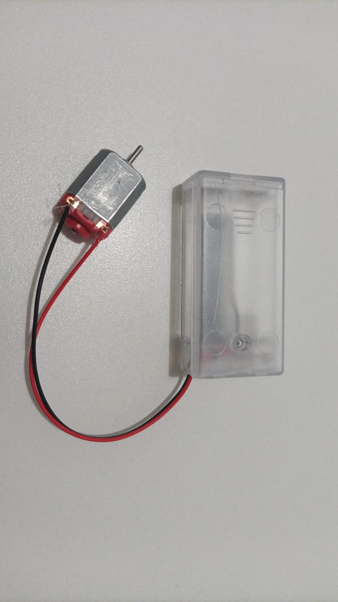
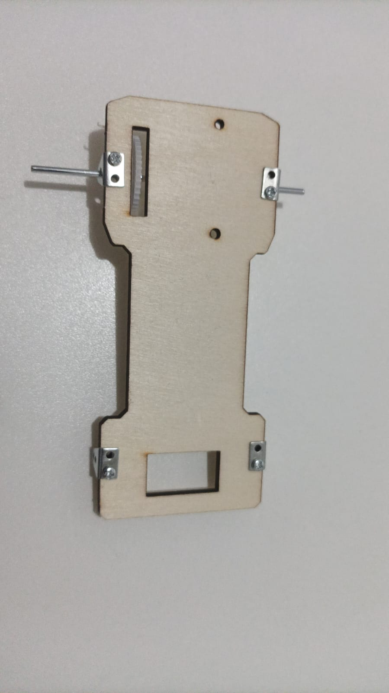

🔧🚗 Oficinal de carrinhos robóticos — etapas de montagem
Siga o guia prático em 5 passos com fotos e instruções claras. Use as setas do teclado
←→ para navegar, clique nas imagens para ampliar e marque cada etapa como concluída. ✨
18 fotos Kit motor DC 2×AA
📦 Antes de começar (itens prontos)


Dica: mantenha a área limpa e as peças organizadas por etapa.